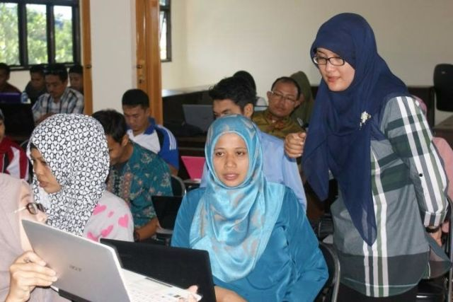

Sayembara Desain Laman Web LPPPTK KPTK
PPPTK KPTK mengadakan sayembara desain laman web yang akan menggantikan antar muka pada laman web resmi LPPPTK KPTK http://kptk.or.id.
Lanjutkan membaca
Lembaga Sertifikasi Profesi dan Uji Kompetensi Keahlian Guru Vokasi di Indonesia?
Lembaga Sertifikasi Profesi (LSP) bidang Kelautan Perikanan dan Teknologi Informasi dan Komunikasi (selanjutnya disebut LSP LPPPTK KPTK) adalah lembaga sertifikasi profesi yang dibentuk oleh Direktorat Jenderal Guru dan Tenaga...
Lanjutkan membaca

Kegiatan Diklat dan TOT TIK untuk Pembelajaran Tingkat Dasar Bekerjasama dengan Microsoft
Bertempat di kantor LPPPTK KPTK, dari tanggal 11 hingga 13 Februari 2016 telah berlangsung kegiatan Diklat dan TOT TIK untuk pembelajaran Tingkat Dasar bekerjasama dengan Microsoft yang diikuti oleh peserta dari beberapa propinsi.
Lnjutkan membaca